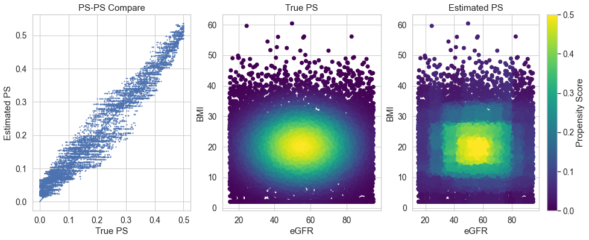

Despite the intimidating names given to methods like tree-structured Parzen estimation, efficient hyperparameter optimization doesn’t need to be complicated.
Introduction
Hyperparameter optimization
This post came about as a rebellion against obfuscation. I was trying to optimize the hyperparameters of a classification model and I came across an interesting-looking paper [1]. Unfortunately, the paper is dense with mathematics and gave me no intuitive insight into what’s happening. As I dug deeper, I found that the ideas they were presenting are absurdly simple (thanks partly to the post in [2]) and I wanted to capture this simplicity for future reference.
I will do this in the actual setting in which my use case arose: propensity score (PS) matching. There are some prerequisites for this discussion, which I unfortunately have to assume. If you aren’t familiar, the classic reference on PS matching is [3], although I find the more recent review in [4] to be a bit more accessible. In any case, suffice it to say that in PS matching, you need to train a binary classification model, and one needs somehow to choose the “best” possible model over a large space of modeling choices.
I refer to these modeling choices as hyperparameters. For me, a hyperparameter is any – and I mean any – decision you make along the way to making a prediction with a model that cannot be optimized by gradient descent. I like this definition because it includes preprocessing operations that often aren’t thought of as hyperparameters. For instance, do you subtract the mean from your variables before optimizing the model parameters? This choice is a hyperparameter: subtract_mean \(\in \{True, False\}\). In many cases, there is conventional wisdom around certain choices and these choices have a well-chosen default, but the choice is there, it affects your analysis, it can’t be optimized by gradient descent and it’s therefore by my definition a hyperparameter.
More conventional hyperparameters are quantities like regularization strength (which was discussed in a previous post ), type of regularization (e.g., L1 versus L2), maximum tree depth for a tree-based model, number of estimators in an ensemble method, number of layers in a multi-layer perceptron, and even the choice of which model to use. A bad choice for these hyperparameters can lead to poor performance in your model, so it’s worthwhile to spend time thinking about how we can best optimize our objective function over these hyperparameters.
Propensity score matching
We want to answer the question: does treatment X cause outcome Y? Although the ideal approach to answering such a question is the randomized control trial, it’s often very impractical to perform such a trial; meanwhile there exists a wealth of high quality data that potentially already contain the cause-effect signal we’re interested in, for instance, electronic health record data generated through routine medical practice.
Whenever the intervention is not randomly assigned, there will often be systematic differences between two groups, which may obscure the causal signal if not taken into account. It turns out that by “matching” patients on their probability of treatment assignment, referred to as their propensity score, one can generate two groups of patients with identical distributions of baseline covariates. It follows then that one can compare that outcomes in these matched groups and obtain an unbiased estimate of the treatment effect. For details, see [3] and [4].
This all works in theory, when the propensity score is known. However, the propensity score is never known in observational settings and must be estimated from the data. The estimation of the propensity score from the data requires modeling choices. We want to somehow choose the “best” propensity score model over a large space of possible models.
We define the following procedure for optimizing the hyperparameters of the propensity score model:
Choose a set of hyperparameters
Train a model to predict P(treat|covariates)
Perform matching on the estimated propensity score
Evaluate the achieved covariate balance
Our focus will be on how to implement step (1) such that we arrive quickly at a good set of hyperparameters, since steps (2) and (3) can be quite time-consuming. For (4), we compute the area between the 1-dimensional marginal distributions as a measure of balance to be optimized.
Simulation Setup
To start, we’ll simulate a toy dataset consisting of two covariates. To make the example more tangible, we’ll give the covariates names. One will be BMI, the other will be eGFR. We’re interested in studying the effect of a certain medication on a patient population as seen in electronic health record databases. The problem: both BMI and eGFR influence the treatment decision by practicing physicians. The medication is not prescribed to patients that are extremely overweight, nor to patients that are extremely underweight. Furthermore, the medication is not prescribed to patients with poor kidney function (low eGFR), nor is it prescribed to patients with normal kidney function (high eGFR). As a result of the interaction between these covariates and the treatment decision, we cannot simply compared treated and untreated patients. We have to correct for these systematic differences through matching.
Below we show the distribution of patients and the simulated propensity score. The propensity score shown here represents the “true” (unknown) propensity score that generates the treatment decision. Our goal here is to estimate this quantity.
Code
def make_bmi_egfr_blob(n_samples: int) -> pd.DataFrame:# eGFR has a mean of 55 and a spread of +/- 40; clip to range [5, 120]# This clipping is actually common as often measurements just report >= 120 egfr =55+40* np.random.power(1, n_samples) * np.random.choice([-1, 1], size=n_samples) egfr = np.clip(egfr, 5, 120)# BMI has mean 20 and a spread +/- 10; clip to range [2, 80] bmi =20+10* np.random.randn(n_samples) bmi = np.clip(bmi, 2, 80) features = pd.DataFrame.from_records( np.vstack((egfr, bmi)).T, columns=['eGFR', 'BMI'] )return featuresdef ps_true(x, y):# propensity score is a circle of radius == standard deviation around the mean x_ = (x - x.mean()) / x.std() y_ = (y - y.mean()) / y.std()return expit( - (x_**2+ y_**2 ) )
Figure 1: Scatter plot showing the BMI and eGFR values of the simulated patient population. Color indicates the true (and unknown) probability of treatment.
Given this model of propensity score, we can now sample the realized treatment group assignment. In doing so, we get the distributions shown below for BMI and eGFR for the treated and untreated groups.
Code
treat_indicator = (np.random.rand(n_samples) <= propensity_score).astype(int)treat_label = ['treated'if t else'untreated'for t in treat_indicator]
Figure 2: Input distributions to the matching problem.
The number of patients in each group is given as below. The goal will be to choose a subset of patients from the untreated group such that distributions of BMI and eGFR in the chosen subset match the distributions in the treated group.
N
treat
untreated
8024
treated
1976
Matching on the true propensity score
In practice, we never have direct knowledge of the propensity score. But since we do in our simulation, let’s first check what happens when we match using the true propensity score. This solution should represent the best we can hope to achieve with propensity score matching.
Figure 3: Result of matching using the true propensity score.
As you can see, propensity score matching delivers on its promise – the covariates distributions conditioned on the propensity score are nearly identical.
Matching on estimated propensity score
Now let’s see how well we can perform matching by estimating the propensity score. To start, let’s try using a logistic regression to estimate the propensity score. As the logistic regression has linear decision boundaries, it should be clear that such a model would not be expected to perform well on this particular data, and indeed that is what we see.
Figure 4: Result of using logistic regression to model propensity score.
As seen in the left hand plot above, the model estimates the true PS very poorly. As a result, when we match using the estimated PS, we get very poor balance, as seen below. Although the distribution on BMI looks somewhat balanced, eGFR in the matched population is left completely unbalanced. This is unacceptable, but it simply a result of our modeling choice, not a breakdown of the PS approach per se.
Figure 5: Achieved balance of PS matching using logistic regression model for PS.
Since it’s clear that the propensity score has some non-linearity to it, it make sense to next try using some sort of model that can capture this non-linearity. Let’s try therefore a random forest model for the propensity score. To illustrate a point, I will pick very poor hyperparameters for the random forest: max_depth=2, n_estimators=2. The resulting estimation for PS is shown below. Although the estimation is still quite poor, the random forest does seem to better model the PS, and this is also reflected in the resulting matched distributions, shown below. Still it’s clear that the matching is far from the ideal case of matching on the true PS. So we have some work left to do.
Figure 6: Result of using random forest to model propensity score.
Figure 7: Achieved balance of PS matching using random forest model for PS.
Hyperparameter optimization
Random search
We’ve seen that the choice of hyperparameters makes a difference in the achieved balance. So let’s try a few more choices of hyperparameters and see if we can find some improvements in the balance. For the logistic regression, we randomly sample a few values for the regularization strength C; for the random forest model, we randomly sample a few values for the max_depth, keeping the n_estimators fixed to 2, as before. The resulting balance (roughly, the total area between the 1D marginal distributions) as a function of these hyperparameters is shown below.
Figure 8: Achieved balance of various models for PS.
After trying a few values of hyperparameters, we’ve realized that training models takes a long time and we can only try a limited number of hyperparameters before we have to just pick one. If given only one more chance, which model would you pick? So far it looks like the random forest model is the better bet and furthermore, it might be useful to try a max depth between 5 and 20, as this seems to be the region of hyperparameter space where the balance is the best.
This simple calculation, which you just did in your brain instinctively, is really all there is to hyperparameter optimization by tree-structured Parzen estimation (TPE), at least conceptually. For each model (logistic regression or random forest), we construct a “hypermodel” which predicts as a function of the various hyperparameters the expected balance. Our brains created these hypermodels automatically. If you proceed to make these models formal, then you’ll arrive eventually at TPE.
Tree-structured Parzen estimator
So, let’s now see if we can use TPE to achieve even better balance. We will use the hyperopt library. To make things a little more interesting, we’ll optimize not just over model_choice (LogisticRegression or RandomForest), \(C\) and max_depth, but also over the penalty type (L1 or L2) for logistic regression, n_estimators and min_samples_lead for random forest (see here for a description of these parameters).
Code
# define a search spacefrom hyperopt import hpfrom hyperopt import fmin, tpe, space_eval, Trialsspace = hp.choice('model', [ (LogisticRegression, {'C':hp.loguniform('C', -4.6, 4.6), # BASE E'penalty':hp.choice('penalty', ['l1', 'l2']),'solver':'saga' }), (RandomForestClassifier, {'n_estimators':hp.uniformint('n_estimators', 2, 100),'min_samples_leaf':hp.uniformint('min_samples_leaf', 1, 500),'max_depth':hp.uniformint('max_depth', 2, 30),'random_state':123 })])# minimize the objective over the spacetrials = Trials()best = fmin(ps_match, space, algo=tpe.suggest, max_evals=1000, trials=trials, verbose=False)print('Best model found:')for param in best.items():print(f'\t{param[0]:20}{param[1]}')
Best model found:
max_depth 24.0
min_samples_leaf 211.0
model 1
n_estimators 6.0
Figure 9: Achieved balance of various models for PS using TPE for hyperparameter sampling.
Below, I show how the sampling of the hyperparameter space evolves over time using the TPE method. We see a number of interesting views of the results of the hyperparameter search. We see a number of interesting features. In
Figure 10: An illustration of how the sampling of hyperparameters varies over time in TPE for the random forest hyperparameters.
Finally, let’s see what the matching results look like! The search finds that the best results are achieved by a random forest model with max_depth = 24, min_samples_leaf = 211, and n_estimators = 6. Below, I show the resulting PS estimation using these values for the hyperparameters. Although the results are not perfect, we have clearly greatly improved upon the initial results.

Figure 11: Result of using TPE to find best hyperparameters to model propensity score.
Furthermore, as shown below, the resulting matched populations look great! I would argue this match is hard to distinguish from the match above using the true propensity score.
Figure 12: Achieved balance of PS matching using best model achieved from TPE.
Conclusion
Hyperparameter optimzation is an important step in any machine learning workflow. Random sampling of hyperparameters is a very inefficient way to optimize hyperparameters, as our eyes can very quickly tells us. Tree-structured Parzen estimation is a nice alternative to random hyperparameter search, with easy-to-use Python implementations readily available. Although the method sounds intimidating, it’s really nothing more than a formalization of what we would naturally do anyway if we were to manually choose hyperparameters to test.